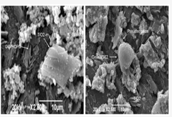
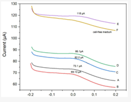

To the research professors: Martha Sevilla from the Technical University of Ambato, Professor Ruben Camargo from the University of Valle in Cali, Colombia, and Pablo Valle from the Technical University of Ambato, members of the CIMTEQ Network team, for their hard work in the research. Published in the Scopus journal (Q1) in the journal BIOSENSORS with the title “Label-Free Electrochemical Detection of K-562 Leukemia Cells Using TiO2-Modified Graphite Nanostructured Electrode.” The researchers developed a graphite electrode with modified TiO2 to detect K562 chronic myeloid leukemia cancer cell
 Email: red.cimteq@email.com